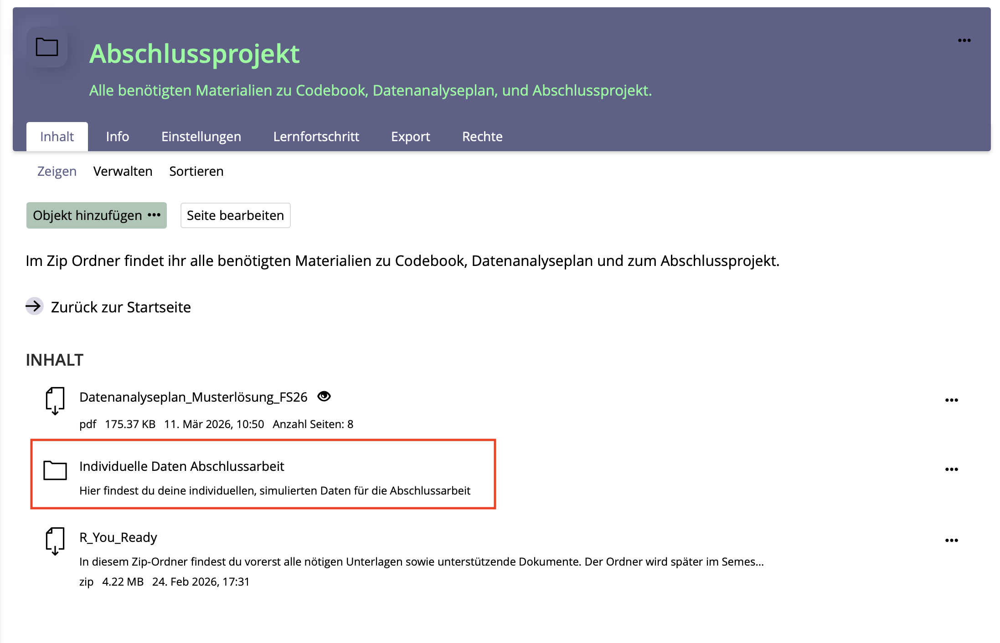
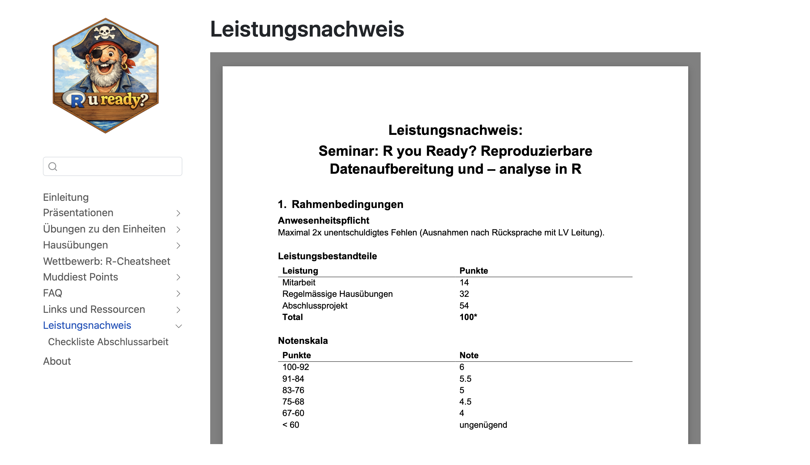

dat_full_below_above <- dat_full |>
filter(group_all != "control")R u Ready? FS2026 | Psychologie der Digitalisierung - Einheit 12
R u Ready? Reproduzierbare Datenaufbereitung und -analyse mit R
FS 2026
LV-Leitung: PD Dr. Sandra Grinschgl / MSc. Laura Hirt
Tutor: BSc. Lars Schilling
12. Einheit, 13.05.2026
Heute:
Inhalte heute
Fragen zur R-Hausübung 2
Erinnerung: R-Cheatsheet-Wettbewerb
Informationen zur Abschlussarbeit
Simulierte Datensätze
Checkliste: Datenaufbereitung & Inferenzstatistik
Inferenzstatistik: t-Test
Fragen zur R-Hausübung 2?

Erinnerung: R-Cheatsheet-Wettbewerb
Aufgabe: Erstellt ein persönliches R-Cheatsheet als kompaktes Nachschlagewerk.
Wichtigste Infos:
Teilnahme ist freiwillig
Vorlage und Abgabeordner auf ILIAS
Inhalte: zentrale R-Befehle, Analyse-Workflows, Beispiele
Mindestkriterien: strukturiert, verständlich erklärt, praktisch nützlich, übersichtlich gestaltet
2 Extrapunkte bei erfüllten Mindestkriterien
+2 Extrapunkte für das beste Cheatsheet durch Kursabstimmung
Deadline: EH13, 20.05.
Abstimmung: EH14, 27.05.
Maximal: 4 Extrapunkte
Informationen zur Abschlussarbeit
Simulierte Datensätze
Auf ILIAS findet ihr im Ordner Individuelle Daten Abschlussarbeit einen Ordner mit eurem Namen. Dieser ist nach dem PsychDS-System strukturiert und enthält im Unterordner raw eure persönlichen, simulierten Datensätze für die Abschlussarbeit.

Informationen zur Abschlussarbeit
Informationen auf der Webseite

Informationen zur Abschlussarbeit
Simulierte Datensätze
- Vorgehen: Eine Funktion simuliert eine oder mehrere Populationen und zieht daraus zufällig Datenpunkte. Diese Zufälligkeit der Ziehung führt dazu, dass sich eure Datensätze unterscheiden!
- Dadurch ergeben sich Unterschiede in den Hypothesentests und deskriptiven Statistiken.
- Deshalb können Mittelwerte, Korrelationen, t-Tests etc. nicht bei allen exakt gleich ausfallen.
- Wichtig: Die Ergebnisse sollten aber insgesamt in einem vergleichbaren Bereich liegen.
Inferenzstatistik: t-Test
Worum geht es?
Mit einem t-Test prüfen wir, ob sich Mittelwerte statistisch bedeutsam voneinander unterscheiden.
Typische Fragestellungen:
Unterscheidet sich eine Gruppe von einem festen Vergleichswert?
Unterscheiden sich zwei unabhängige Gruppen voneinander? (between-subjects)
Verändert sich eine Variable innerhalb derselben Personen über zwei Messzeitpunkte? (within-subjects)
In dieser Einheit:
Wir fokussieren auf den t-Test für unabhängige Stichproben.
Inferenzstatistik: t-Test
Beispiel Abschlussarbeit: Erwartete PCT-Leistung
Fragestellung: Unterscheiden sich Personen in der above- und below-Gruppe darin, wie sie ihre kommende Leistung im Pattern Copy Task einschätzen?
Variablen:
Gruppierungsvariable:
group_allabovebelow
Abhängige Variable:
pre4Rating der erwarteten eigenen PCT-Leistung (im Vergleich zu anderen Studierenden)
nach drei vorherigen Fake-Feedbacks
Hypothesentest
Wir vergleichen die Mittelwerte von pre4 zwischen zwei unabhängigen Gruppen.
Inferenzstatistik: t-Test
Hypothesen beim t-Test
Nullhypothese H0
Es gibt keinen Mittelwertsunterschied zwischen den Gruppen.
H₀: μ_above = μ_below
H₀: Die beiden Gruppen unterscheiden sich nicht in ihrer erwarteten PCT-Leistung.
Alternativhypothese H1
Es gibt einen Mittelwertsunterschied zwischen den Gruppen.
H₁: μ_above ≠ μ_below
H₁: Die beiden Gruppen unterscheiden sich in ihrer erwarteten PCT-Leistung.
Inferenzstatistik: t-Test
Grundidee des t-Tests
Der t-Test prüft, ob ein beobachteter Mittelwertsunterschied grösser ist, als man aufgrund zufälliger Schwankungen erwarten würde.
Dafür vergleicht er:
- den Unterschied zwischen den Gruppen mit der Streuung innerhalb der Gruppen
Intuition:
Unterschied gross, Streuung klein → spricht eher für einen systematischen Gruppenunterschied
Unterschied klein, Streuung gross → könnte gut durch Zufall erklärbar sein
Merke:
Der t-Wert setzt den Mittelwertsunterschied ins Verhältnis zur Unsicherheit.
Der p-Wert zeigt, wie plausibel ein solcher Unterschied wäre, wenn H₀ wahr ist.
Inferenzstatistik: t-Test
Varianten des t-Tests
| Situation | Fragestellung | R-Funktion |
|---|---|---|
| Ein-Stichproben-t-Test | Unterscheidet sich ein Mittelwert von einem festen Vergleichswert? | t.test(av, mu = x) |
| t-Test für unabhängige Stichproben | Unterscheiden sich zwei unabhängige Gruppen? –> between-subjects Vergleich | t.test(av ~ uv, data = dat) |
| Gepaarter t-Test | Unterscheiden sich zwei Messzeitpunkte derselben Personen? –> within-subjects Vergleich | t.test(av1, av2, paired = TRUE) |
Inferenzstatistik: t-Test
Vorbereitung in R
Für den Vergleich betrachten wir nur die Gruppen above und below.
Danach stellen wir sicher, dass die Gruppierungsvariable als Faktor gespeichert ist.
dat_full_below_above$group_all <-
as.factor(dat_full_below_above$group_all)Inferenzstatistik: t-Test
Vor dem t-Test: Gruppen beschreiben
Bevor wir einen Hypothesentest durchführen, sollten wir die Gruppen deskriptiv anschauen.
dat_full_below_above |>
group_by(group_all) |>
summarise(
n = n(),
mean_pre4 = mean(pre4, na.rm = TRUE),
sd_pre4 = sd(pre4, na.rm = TRUE)
)# A tibble: 2 × 4
group_all n mean_pre4 sd_pre4
<fct> <int> <dbl> <dbl>
1 above 53 59.7 15.7
2 below 53 32.7 18.9Warum ist das wichtig?
Wir sehen, wie viele Personen pro Gruppe vorhanden sind.
Wir sehen, welche Gruppe höhere Werte aufweist.
Wir können den späteren t-Test inhaltlich besser interpretieren.
Inferenzstatistik: t-Test
Voraussetzungen prüfen
Unabhängigkeit der Beobachtungen
Jede Person kommt nur einmal im Datensatz vor.
Die Gruppen sind unabhängig voneinander.
Metrische abhängige Variable
pre4sollte als numerische Variable vorliegen.
Verteilung und Ausreisser
- Die AV sollte innerhalb der Gruppen keine stark problematische Verteilung aufweisen.
Varianzhomogenität
Relevant für den klassischen t-Test mit
var.equal = TRUE.Beim Welch-t-Test weniger kritisch.
Inferenzstatistik: t-Test
Voraussetzung: Varianzhomogenität
Varianzhomogenität bedeutet: Die Streuung der AV ist in beiden Gruppen ungefähr gleich gross.
Prüfung mit Levene-Test
library(car)Loading required package: carData
Attaching package: 'car'The following object is masked from 'package:dplyr':
recodeThe following object is masked from 'package:purrr':
someleveneTest(pre4 ~ group_all, data = dat_full_below_above)Levene's Test for Homogeneity of Variance (center = median)
Df F value Pr(>F)
group 1 2.8442 0.0947 .
104
---
Signif. codes: 0 '***' 0.001 '**' 0.01 '*' 0.05 '.' 0.1 ' ' 1Interpretation
p ≥ .05: kein statistischer Hinweis auf unterschiedliche Varianzen (klassischer t-Test möglich,
var.equal = TRUE)p < .05: Hinweis auf unterschiedliche Varianzen (Welch-t-Test verwenden,
var.equal = FALSE)
Inferenzstatistik: t-Test
Welcher t-Test in R?
Bei unabhängigen Stichproben berechnet R standardmässig den Welch-t-Test.
t.test(pre4 ~ group_all,
data = dat_full_below_above)Der Welch-t-Test erlaub unterschiedliche Varianzen in den Gruppen.
Der klassische t-Test setzt Varianzhomogenität voraus:
t.test(pre4 ~ group_all,
data = dat_full_below_above,
var.equal = TRUE)Praktische Empfehlung:
Wenn ihr unsicher seid, verwendet den Welch-t-Test. Er ist bei ungleichen Varianzen robuster. Am besten schaut ihr euch die Varianzhomogenität aber mit den Levene Test an.
Inferenzstatistik: t-Test
Unser Beispiel
Für unser Beispiel:
t-Test für unabhängige Stichproben
t.test(pre4 ~ group_all, data = dat_full_below_above, var.equal = TRUE)
Two Sample t-test
data: pre4 by group_all
t = 7.9845, df = 104, p-value = 0.000000000001991
alternative hypothesis: true difference in means between group above and group below is not equal to 0
95 percent confidence interval:
20.25170 33.63509
sample estimates:
mean in group above mean in group below
59.66038 32.71698 Inferenzstatistik: t-Test
Wichtige Bestandteile im Output
Ein typischer t-Test-Output enthält:
t: Teststatistik (7.985)df: Freiheitsgrade (104)p-value: Signifikanztest (< .001)confidence interval: Konfidenzintervall des Mittelwertsunterschieds [20.25; 33.63]sample estimates: Mittelwerte der Gruppen (59.66 vs. 32.72)
Inferenzstatistik: t-Test
Interpretation des t-Tests
Statistisches Ergebnis
t(104) = 7.98, p < .001
Der Gruppenunterschied ist statistisch signifikant.
Inhaltliche Interpretation
Personen in der Gruppe above schätzen ihre kommende Leistung im Pattern Copy Task höher ein als Personen in der Gruppe below.
Aber:
Der p-Wert sagt noch nicht, wie gross der Unterschied ist. Dafür brauchen wir zusätzlich eine Effektgrösse.
Inferenzstatistik: t-Test
Effektgrösse: Cohen’s d
Ein signifikanter p-Wert zeigt, dass ein Unterschied statistisch nachweisbar ist.
Er sagt aber nicht, wie gross dieser Unterscheid ist.
Deshalb berechnen wir zusätzlich Cohen’s d.
effsize::cohen.d(pre4 ~ group_all,
data = dat_full_below_above)Grobe Orientierung
d ≈ 0.20: kleiner Effekt
d ≈ 0.50: mittlerer Effekt
d ≈ 0.80: grosser Effekt
Inferenzstatistik: t-Test
Interpretation von Cohen’s d
effsize::cohen.d(pre4 ~ group_all,
data = dat_full_below_above)
Cohen's d
d estimate: 1.551045 (large)
95 percent confidence interval:
lower upper
1.111706 1.990383 Interpretation
Der Gruppenunterschied ist gross.
- Cohen’s d = 1.55, 95%-KI [1.12, 1.99]
Inhaltlich:
Die Gruppen unterscheiden sich nicht nur statistisch signifikant, sondern auch deutlich in ihrer erwarteten PCT-Leistung.
Heute haben wir…
… uns die simulierten Datensätze für die Abschlussarbeit angeschaut.
…Korrelationen, Regressionen und t-Tests gerechnet.
Hausübung
R-Übung III bis 27.05.26 –> auf diese letzte Hausübung gibt es kein Feedback